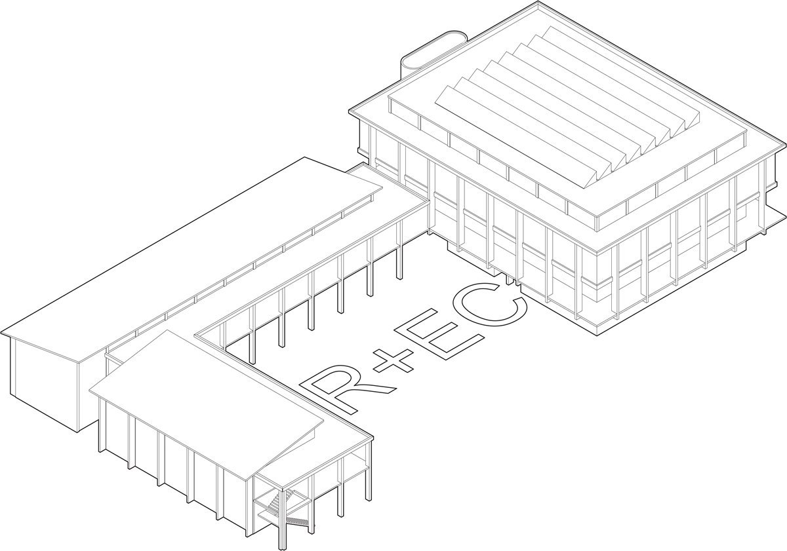
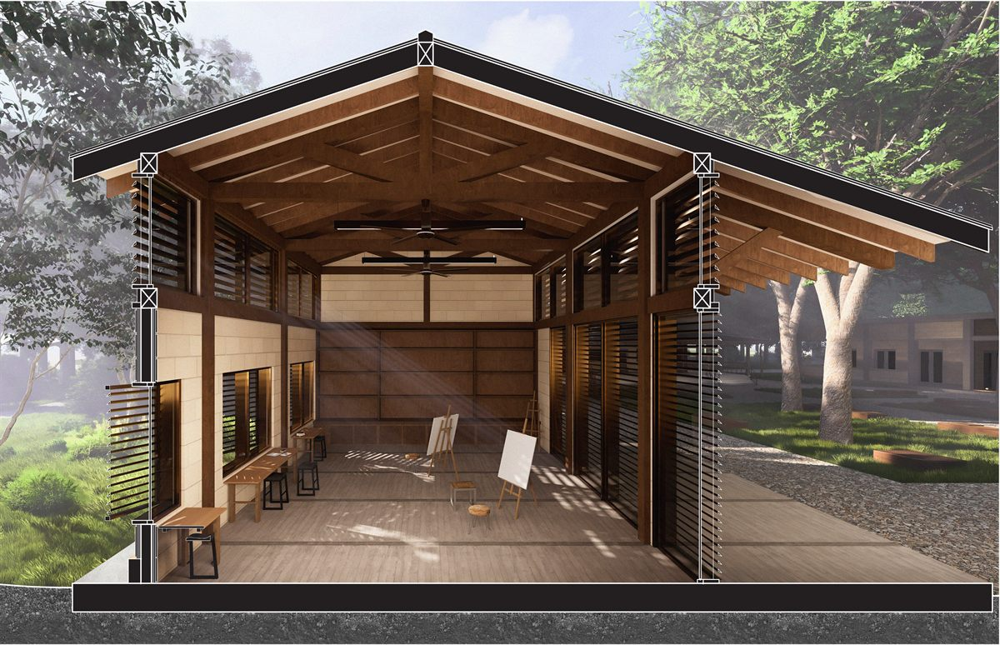

Henri Maman
Portfolio
-

R+EC A youth recreation and learning center in North Miami Beach made up of a skate park and gym, an entrepreneurship building, and a public commercial building. A timber circulation spine links the three, while vertical fins and deep overhangs work with active cooling to cut energy use. -

Deering Estate A small academic complex at the Deering Estate that treats thresholds as architecture, linking classrooms, a lab, a lecture hall, and a gallery through breezeways and shaded patios. Louvers, deep overhangs, and exposed timber control light and airflow while keeping the buildings open to the landscape. -
Ramp & Reel Fishing Market
Ramp & Reel is a fish market on the Miami River that turns an industrial edge into an active public waterfront. Continuous ramps make the entire building accessible and guide visitors through the market toward the river.
-
Mercy University
As a Project Design Intern at Clarke Caton Hintz, I produced demolition plans, proposed floor plans, and reflected ceiling plans for Mercy University. I also built the project's SketchUp model and helped render it in Lumion.
-
Built Work
Some ideas are best tested with your own hands. These projects, a reclaimed-timber pergola in southern France and a wood and steel garage door in Princeton, came from a simple drive to make things myself and to see a drawing become something solid, useful, and lasting.
- Rain Field A modular campus canopy that provides shade and collects rainwater without any excavation. Its aluminum frame and fabric roof drain into concrete base blocks that store the water for campus irrigation.